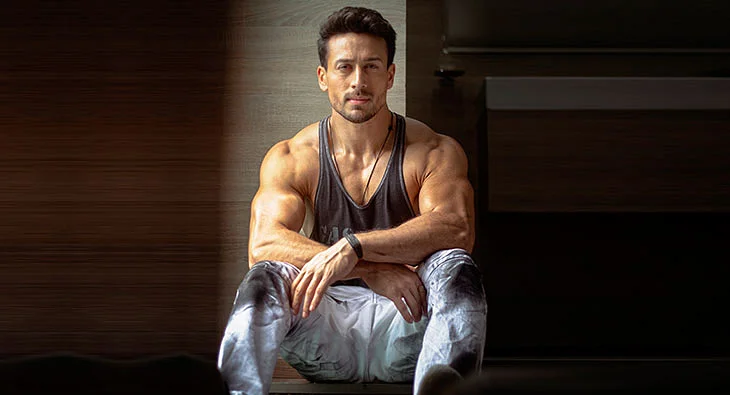
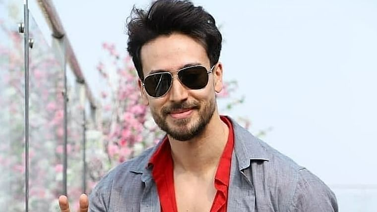

Tiger Shroff review and about him
Jai Hemant Shroff known as Tiger Shroff is my favourite Actor. He is the son of Mr. Jackie Shroff And Ayesha Shroff. He has a younger sister. Her name is Krishna Shroff . He was born on 2nd march 1990. He is 30yrs old this year. A great honour to our Bollywood industry. He is an auspicious Dancer With additional Talents. He is also a Martial Artist; Black belt holder. His stunts in his movies are 50 percent original. In his first movie, Heropanti, he had did his 75 percent stunts without any rope or instruments. His Movies are Heropanti, Baaghi , Baaghi 2, Baaghi3 , Student Of the Year 2, War and Munna Michael . His upcoming movie is named as Rambo. So eagerly waiting for it ? .He is an Inspiration To Me. I love you so much Tiger Shroff.
Tiger Shroff Photo Gallery

